Titre de la séquence : « Convection de masse d'air froid »
Jeudi 14 mai : La descente d'air froid en altitude gagne tout le pays avec un régime de traîne qui tend à se généraliser. Des averses orageuses localisées seront possibles, surtout sur le nord et le nord-est — ce qui inclut directement la Côte-d'Or et la Bourgogne.
Samedi 16 mai : Le thalweg d'altitude évacue notre pays par l'est. Des résidus convectifs seront encore observés entre l'extrême sud-est et la Corse uniquement.
Dimanche 17 mai : L'air froid en altitude s'évacue durant le week-end au profit d'une circulation plus océanique. Il n'est pas identifié de risque convectif significatif.
Ambiance générale : Giboulées quasi généralisées dans une ambiance bien fraîche pour la saison. Des Pyrénées à l'Auvergne-Rhône-Alpes et à la Franche-Comté, le temps est pluvieux le matin. Plus au nord, éclaircies et averses alternent avec un vent de nord-ouest sensible.
L'après-midi : Hormis autour du golfe du Lion (sec et venté), partout ailleurs les averses se multiplient et s'intensifient. Sur le quart nord-est, elles prennent un caractère orageux et sont accompagnées de grésil. Neige : dès 1100m sur les Vosges, 1200m sur le Jura, 1300m sur les Alpes et le Massif central.
Vent : Vent d'ouest sensible avec des rafales atteignant 70 km/h en bord de mer, 50 km/h dans les terres. Tramontane 60–80 km/h.
Températures : Minimales 4–5°C NE, 9–10°C SW. Maximales 11–16°C du nord au sud (hors Méditerranée). Valeurs très en dessous des normales saisonnières pour la mi-mai.
Analyse de grande échelle : « Un gyre cyclonique profond est placé au-dessus de l'Europe centro-nord, qui dirige de nombreuses ondes à faible amplitude vers l'Europe de l'ouest, du sud et de l'est. Ce schéma advecte une masse d'air froide et plutôt sèche vers l'Europe centrale/est, bien que les niveaux moyens/supérieurs froids favorisent toujours une activité convective agile. Au-dessus de l'Europe du Sud, un régime d'écoulement moyen/supérieur à l'ouest reprend une masse d'air marine depuis la Méditerranée, offrant des probabilités augmentées pour une DMC organisée. »
Niveaux de risque : Niveau 2 (>15% sévère) sur le NW Italie (Piémont/Ligurie/Côte d'Azur). Niveau 1 (>5% sévère) sur le nord de l'Espagne et le nord de l'Italie. Zone lightning (>15% foudre) : couvre la France entière, les Îles Britanniques et l'Europe centrale. La Côte-d'Or est dans cette zone lightning — convection agile de masse d'air froid avec risque de foudre significatif.
La situation du jeudi 14 mai est caractérisée par l'installation d'un régime de traîne généralisé sur la France. La carte ECMWF Z500/Pression sol à 11h locales montre un creusement dépressionnaire marqué sur le nord de la France et le Bénélux (998–1000 hPa), avec des isobares serrées traduisant un flux d'ouest-nord-ouest rapide. Le géopotentiel Z500 effondré (teintes bleu profond, ~504–510 dam) sur le nord-est confirme une anomalie froide en altitude exceptionnellement marquée pour la mi-mai.
ESTOFEX décrit précisément ce mécanisme : un gyre cyclonique profond positionné sur l'Europe centro-nord dirige des ondes successives à faible amplitude sur la France. L'air froid en altitude descend bien en dessous des normales saisonnières, créant un lapse rate (gradient thermique vertical) très élevé qui favorise la convection de masse d'air froid — des cellules convectives agiles, peu prévisibles individuellement, mais réparties sur l'ensemble du territoire.
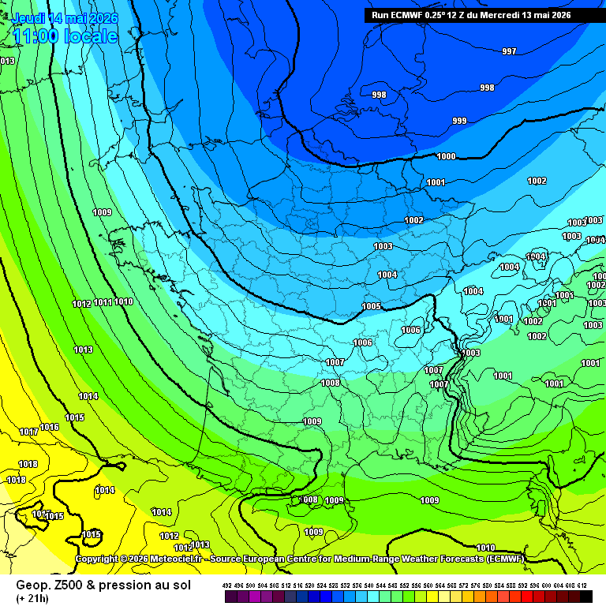
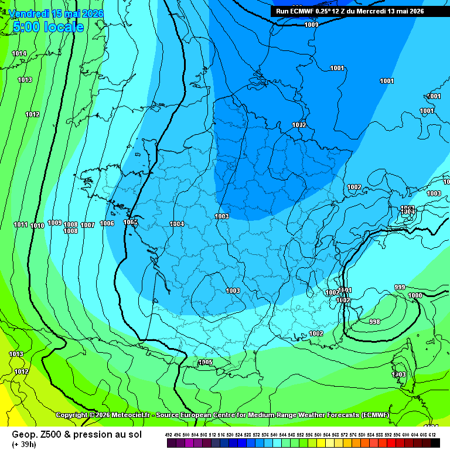
La carte GFS valable jeudi 14 mai à 15Z présente un profil d'instabilité inhabituel pour ce type de situation. Le MUCAPE atteint 1225 J/kg en valeur maximale avec un MULI à −5,1 K — la valeur la plus négative (la plus déstabilisante) observée sur l'ensemble de la séquence depuis le 5 mai. Ce paradoxe apparent s'explique par la nature même de la masse d'air froid : en altitude, les températures sont très basses (~0°C à 850 hPa), créant un lapse rate élevé entre le bas et le haut de la troposphère, même si l'énergie convective absolue reste modérée comparée à une situation d'été. Sur la Côte-d'Or, le MUCAPE est estimé à 300–600 J/kg (teintes vert-jaune clair sur le département).
Le maximum de MUCAPE (teintes vert-jaune vif, ~800–1225 J/kg) est concentré sur le flanc sud-est — Alpes du Sud, Côte d'Azur, nord de l'Italie — ce qui correspond directement aux niveaux 1 et 2 ESTOFEX et à la zone où la masse d'air marine méditerranéenne est reprise par le flux d'altitude, amplifiant fortement l'instabilité. Les contours bleus du MULI englobent la Bourgogne, confirmant une instabilité réelle bien que modérée sur le département.
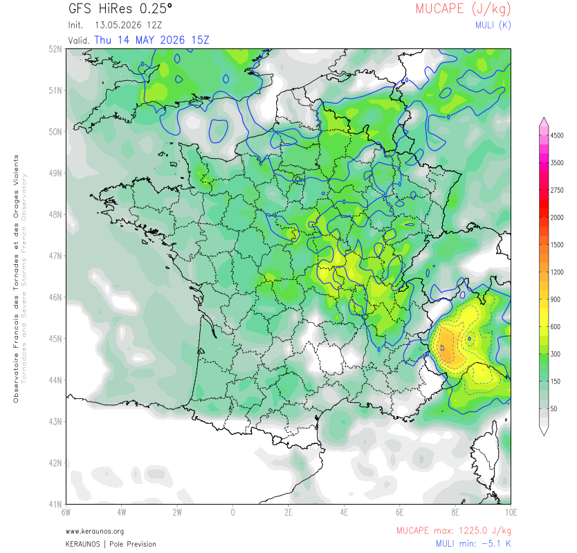
Le cisaillement vertical de vent 0–6 km atteint 37,5 m/s en valeur maximale sur le run, concentré sur l'axe Languedoc / Roussillon / Marseille (zone rouge-orange, >33 m/s). Sur la Côte-d'Or, la carte montre des valeurs de 22 à 26 m/s (zone orange clair), accompagnées de précipitations (>1 mm/h). Ce niveau de cisaillement, combiné à un MUCAPE de 300–600 J/kg, est suffisant pour organiser des multicellules structurées capables de produire du grésil et des rafales descendantes significatives. Il ne s'agit pas d'un environnement supercellulaire classique, mais la convection de masse d'air froid peut être localement intense et rapide.
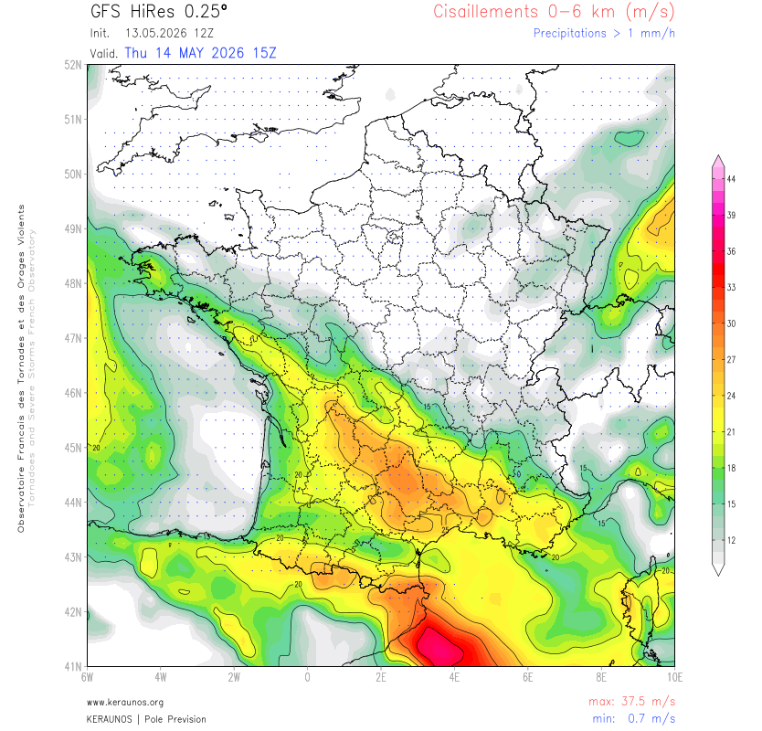
La carte de température à 850 hPa jeudi à 09Z confirme l'ampleur de la masse d'air froid. Sur la Côte-d'Or, la T850 est proche de 0°C (teinte cyan-bleu pâle) avec un vent d'ouest-nord-ouest rapide (barbules serrées). Le gradient thermique est très marqué : ~−2 à 0°C sur le nord de la France, tandis que la zone alpine du sud présente déjà des résidus de chaleur méditerranéenne (+8 à +10°C sur la Côte d'Azur). Cette T850 à 0°C sur la Côte-d'Or explique directement la neige attendue dès 1200m sur le Jura et la possibilité de grésil/neige roulée dans les averses les plus intenses en plaine.
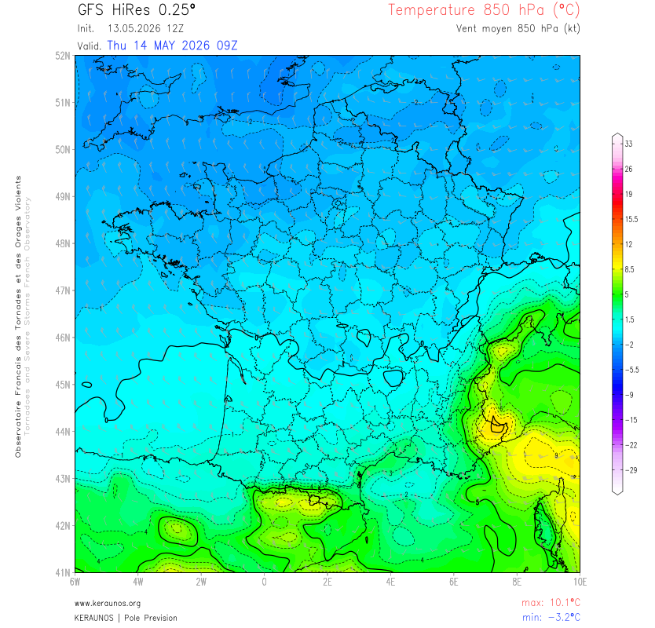
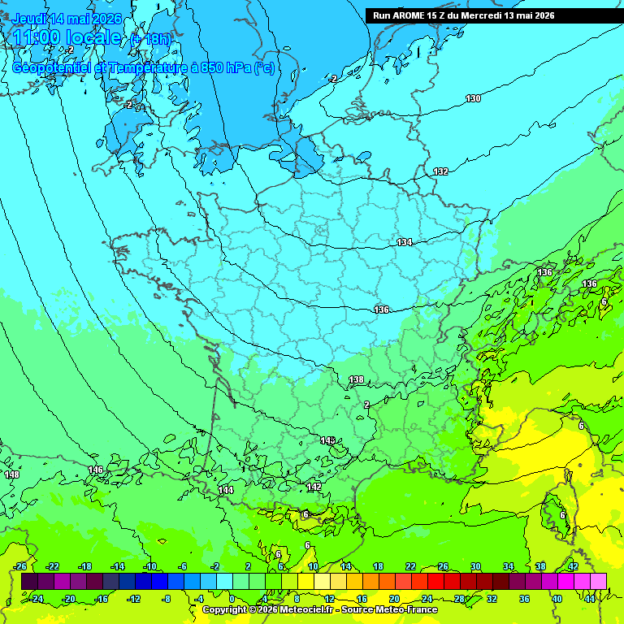
Le modèle AROME 15Z représente à 07h locales un champ de température de surface déjà très frais pour un mois de mai : 8–10°C sur la Côte-d'Or (teintes vert-jaune clair sur la carte AROME). Le contraste est saisissant avec la carte de précipitations simultanée : des lignes d'averses organisées en trainées parallèles orientées NW-SE remontent sur la France depuis l'Atlantique. Sur la Côte-d'Or, les averses du matin affichent des intensités de 2 à 4 mm/h (teintes vert-cyan). L'axe le plus actif se concentre sur les Alpes du Nord / Savoie (vert-jaune, 6–10 mm/h). Les hachures oranges sur les reliefs alpins signalent un risque de grésil/neige roulée à partir des altitudes moyennes, cohérent avec les limites annoncées par Météo-France.
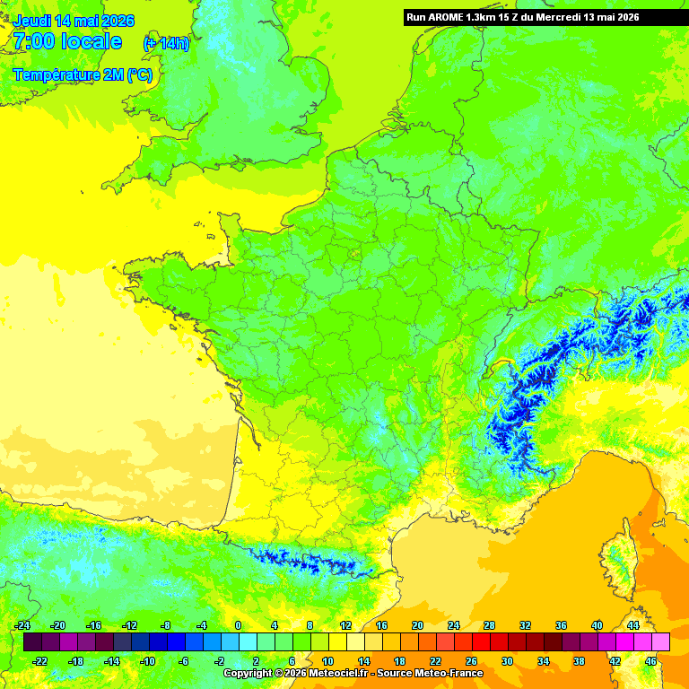
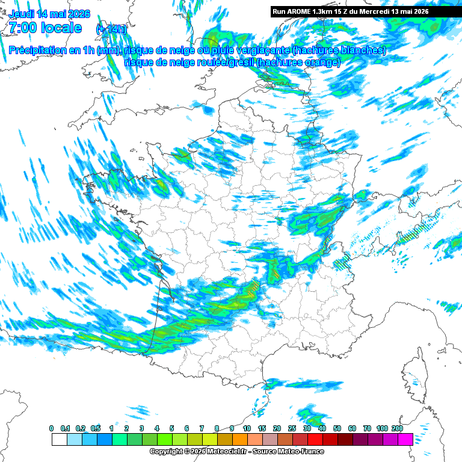
La carte ESTOFEX, émise le mardi 12 mai à 19:55 UTC et valable pour la journée du jeudi 14 mai, classe la Côte-d'Or dans la zone lightning générale (jaune, >15% de probabilité de foudre). Les zones de niveau 1 et 2 sont respectivement sur le nord de l'Espagne/Pyrénées et sur le NW de l'Italie, correspondant aux zones où la masse d'air maritime méditerranéenne est la plus énergétique. L'analyse d'ESTOFEX souligne que la convection sera de type "agile" (convection rapide, peu profonde, caractéristique de la traîne froide) sur la France, sans potentiel de phénomènes très sévères à notre latitude.
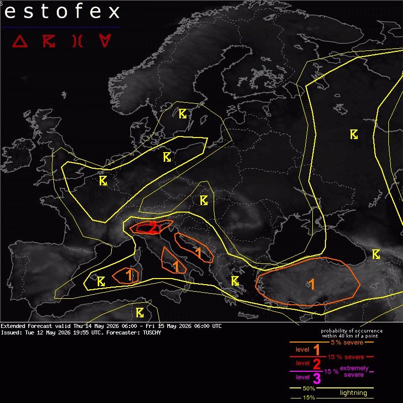
Synthèse Jour J : Journée de traîne froide généralisée sur la Côte-d'Or. Matin pluvieux avec averses modérées (2–4 mm/h). Après-midi : intensification des averses avec caractère orageux probable et grésil sur le quart nord-est (dont la Côte-d'Or). Le cisaillement 0–6 km à 22–26 m/s permet des cellules multicellulaires structurées. Température maximale 11–14°C — nettement en dessous des normales de saison (normalement ~18–20°C mi-mai). Vent d'ouest sensible avec rafales 40–50 km/h. Pas de phénomène sévère majeur attendu, mais grésil possible en plaine lors des averses les plus actives.
Le vendredi 15 mai marque une transition nette vers l'accalmie. La MUCAPE chute à 534 J/kg maximum (contre 1225 J/kg la veille) et le MULI remonte à −1,2 K seulement — instabilité très faible, sans capacité à produire des orages organisés. Sur la Côte-d'Or, les valeurs sont quasi nulles (<50 J/kg sur le département, teintes gris pâle). La convection résiduelle se concentre sur le pourtour méditerranéen et le grand sud-est.
La nuit de jeudi à vendredi est particulièrement froide : le GFS affiche 4 à 6°C à 2m sur la Côte-d'Or à 03Z (teintes gris-bleu sur la carte de température), avec des valeurs descendant à <2°C sur les reliefs de l'est. La T850 hPa remonte légèrement à ~0/+1°C le vendredi matin (Fig. 10), mais reste très en dessous des normales. Le cisaillement basse couche 0–1 km tombe à des valeurs quasi nulles sur la Côte-d'Or dès le samedi 16 mai à 03Z, confirmant la fin du régime convectif actif.
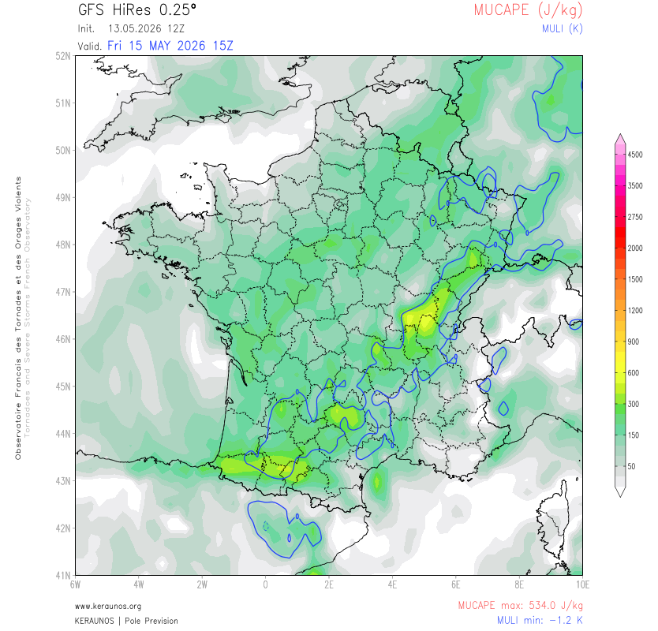
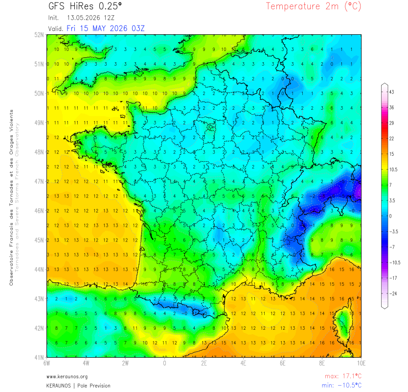
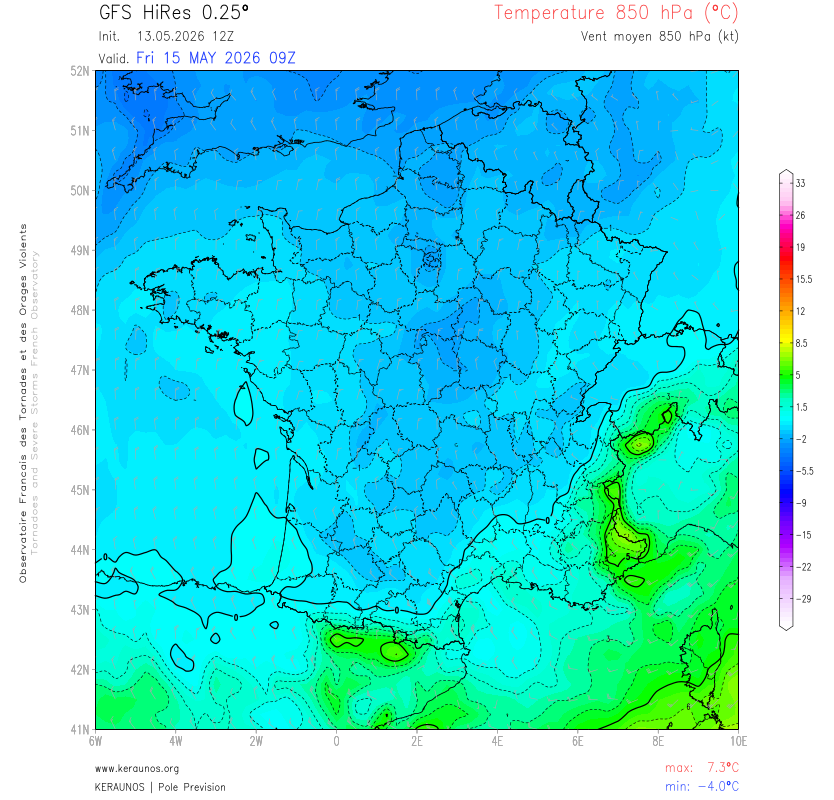
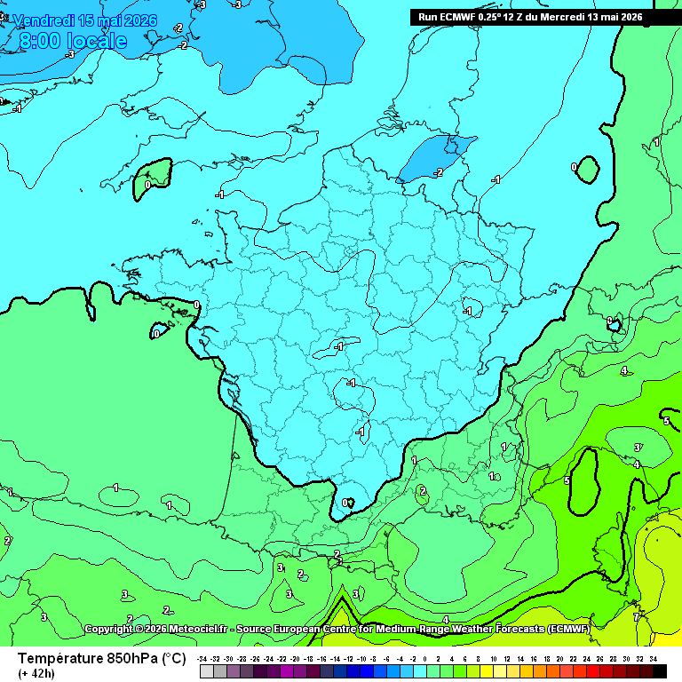
Synthèse Ven. 15 mai : Nette décroissance de l'instabilité. Quelques averses résiduelles possibles en journée, sans caractère orageux marqué. Températures encore fraîches (max 12–15°C). Nuit froide (4–6°C). ECMWF et GFS convergent sur l'accalmie convective.
Selon Keraunos, le samedi 16 mai, le thalweg d'altitude évacue le pays par l'est. Les résidus convectifs se cantonnent à l'extrême sud-est et à la Corse. La Côte-d'Or est totalement épargnée. La carte de cisaillement basse couche 0–1 km au samedi 16 mai à 03Z confirme ce diagnostic : les zones actives (orange-rouge, >12 m/s) sont confinées au Languedoc et à la région PACA, avec des valeurs quasi nulles sur la Bourgogne.
Le dimanche 17 mai, l'air froid en altitude s'évacue définitivement au profit d'une circulation plus océanique. Keraunos est explicite : « il n'est pas identifié de risque convectif significatif ». C'est la fin de la séquence perturbée qui a animé la Côte-d'Or depuis le 5 mai, soit plus de 12 jours consécutifs de situations pluvio-orageuses.
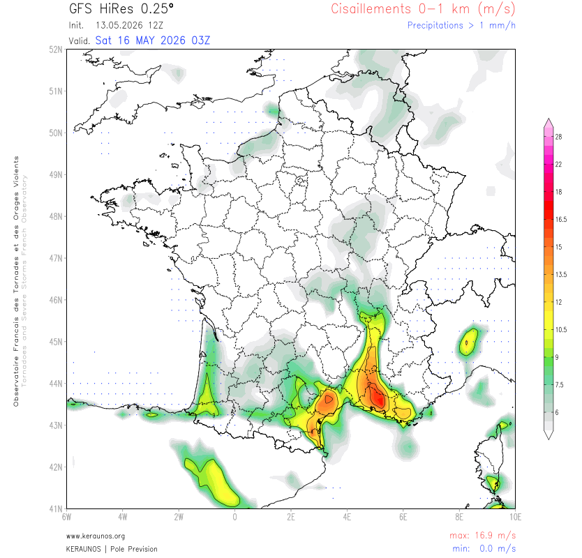
| Date | Éch. | MUCAPE C.-d'Or | MULI | T850 hPa | CIS 0–6km | Risque Côte-d'Or | Fiabilité |
|---|---|---|---|---|---|---|---|
| Jeu. 14 mai | J ✓ | 300–600 J/kg | −5,1 K (!) | ~0 °C | 22–26 m/s | Averses org. · Grésil | Excellente ✓✓ |
| Ven. 15 mai | J+1 | < 50 J/kg | −1,2 K | 0/+1 °C | — | Résiduel · Accalmie | Très bonne ✓ |
| Sam. 16 mai | J+2 | Nul | — | — | ~0 m/s | Calme · SE/Corse seulement | Bonne ✓ |
| Dim. 17 mai | J+3 | Nul | — | — | — | Aucun risque · Keraunos | Bonne ✓ |